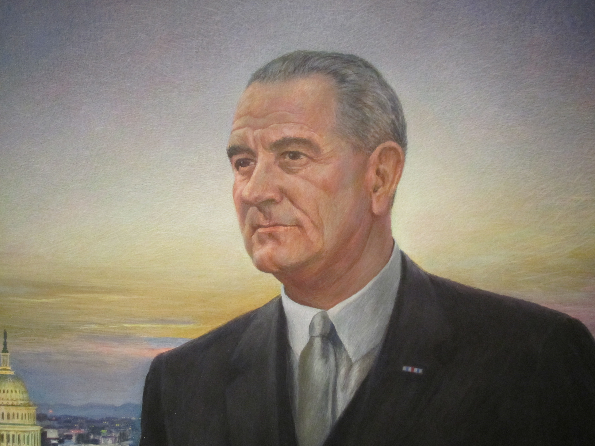
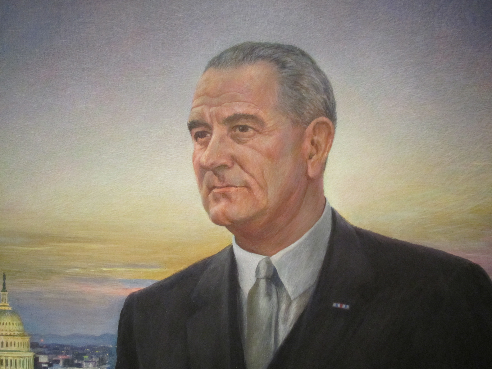

John F. Kennedy était le 35e président des États-Unis d'Amérique. Le 22 novembre 1963, il a été assassiné par ce que beaucoup pensent être Lee Harvey Oswald. De multiples sondages au fil des ans ont démontré que la majorité des Américains pensent qu'Oswald n'a pas travaillé seul et que Kennedy était impliqué dans un complot ayant conduit à sa mort. Cette opinion est même partagée par le neveu de Kennedy et le frère de Kennedy qui pourraient avoir des informations non accessibles au public.
Ces opinions contredisent celles du FBI et de la commission Warren qui ont enquêté de manière approfondie sur l'incident et sont parvenus à la même conclusion. Selon ces deux parties, Lee Harvey Oswald a agi seul. Selon les enquêtes, une fois qu'Oswald a tué le président, il s'est enfui du bâtiment (le dépôt de manuels scolaires du Texas) et a tué un officier pour tenter de s'échapper. Après avoir été capturé par la police, il a nié l'accusation, affirmant qu'il avait été victime de tromperie. Quelque chose qui rend ce récit plus intéressant, c'est que deux jours après l'arrestation d'Oswald, il a été abattu par Jack Ruby, un propriétaire de boîte de nuit qui lui a tiré dessus en direct à la télévision au siège de la police de Dallas.
En attendant son procès, Jack Ruby est décédé d'un cancer du poumon en prison, ne laissant plus aucun suspect évident à interroger.
Cette théorie a été introduite pour la première fois par la Commission Warren alors qu'elle enquêtait sur l'assassinat. Selon l'enquête, trois coups de feu ont été tirés.
Le premier a raté la cible de Kennedy et a rebondi et a heurté le trottoir.
Le troisième coup a clairement touché Kennedy à la tête, lui infligeant un coup fatal. Cependant, il y avait encore sept blessures qui n'étaient pas comptabilisées par ces balles d'autres passagers.
Le deuxième coup s'appelle la balle magique. La théorie affirme qu'une balle est entrée dans le dos de Kennedy, est sortie de son cou, est entrée dans le dos de Connally (le passager devant Kennedy), sortant par l'avant de sa poitrine, frappant son poignet et frappant sa cuisse gauche. Les autorités concluent qu'il s'agit de l'explication la plus probable des blessures. La probabilité que cette balle fasse cela est si faible et c'est pour cette raison qu'ils l'appellent la "Magic Bullet".
Une fois la balle récupérée et examinée, les photos montrent que la balle était en bon état mais comment cela est-il possible si elle a traversé plusieurs os solides ?
Lyndon B. Johnson était le président après JFK. On pense que le motif de LBJ est qu'il ne voulait pas que Kennedy soit président plus longtemps et voulait être son remplaçant. Madeleine Brown, soupçonnée d'entretenir une relation secrète avec LBJ, a alimenté cette théorie lorsqu'elle a déclaré que la nuit précédant l'assassinat, elle et LBJ ont assisté à une fête où LBJ a déclaré "Après-demain, ces Kennedy ne m'embarrasseront plus jamais. Ce n'est pas une menace. C'est une promesse". La majorité des Texans n'aimaient pas LBJ et a encouragé cette théorie en la faisant gagner en popularité.
Il est de notoriété publique que JFK et la CIA ont toujours eu des liens fragiles. Ceci est très probablement dû au chaos des opérations, où le La CIA a espionné plus de 7 000 Américains et fait état de tortures illégales. La CIA s'est peut-être inquiétée de ce malaise ien que Kennedy peut couper le financement. Cela leur donnerait un motif pour embaucher Lee Harvey Oswald, le faire tuer et faire en sorte que le gars qui l'a tué « mourra de causes naturelles ». Ce récit est si sauvage que seul un nombre restreint de personnes/organisations peut tirer cela, la CIA serait certainement sur cette liste. Quelque chose qui rend cette théorie encore plus intéressante, c'est qu'Oswald était repéré à l'ambassade de Russie au Nouveau-Mexique. Cette nouvelle information amène les théoriciens à croire que la CIA a peut-être payé Oswald être un agent double à l'ambassade, cela confirmerait les liens entre Oswald et la CIA.
 

Ces théories sont devenues si largement répandues dans le public qu'il y a eu des enquêtes pour déterminer si elles ont fait ou ont fait pas arriver. Cela n'aide pas que le tueur et le tueur du tueur soient tous morts et n'aient pas pu être interrogés. le La première théorie sur LBJ n'est pas tout à fait possible car LBJ était ailleurs lorsque la fête avait lieu. Le plus probable La raison pour laquelle Madeleine Brown a fait ce commentaire était que leur relation avait récemment pris une tournure très difficile et parce qu'elle voulait vengeance. Par conséquent, cette théorie n'est pas possible à moins qu'il n'y ait des informations qui prouvent que LBJ était à la fête ou que LBJ a en fait dit ces les choses à un moment ou un endroit différent avec Brown.
The second theory is a little harder to prove and disprove since it is extremely difficult to get a hold of any information pertaining to any form of involvement from the CIA. However, it is often with limited information that conspiracy theories are formed which leaves space for debate and speculation. The CIA would have the means and a potential motive for Kennedy's assassination as explained in the theory. Even with this information I find it hard to believe that a government organization so highly regarded as the CIA would go against one of their most important goals of protecting the President by killing him.

 Retour Au Sommet
Retour Au Sommet